if (!require("pacman")) install.packages("pacman")
pacman::p_load(
sf, # vector data operations
dplyr, # data wrangling
data.table, # data wrangling
ggplot2, # for map creation
tmap # for map creation
)3 Spatial Interactions of Vector Data: Subsetting and Joining
Before you start
In this chapter, we explore the spatial interactions between two sf objects. We begin by examining topological relations—how two spatial objects relate to each other—focusing on sf::st_intersects() and sf::st_is_within_distance(). sf::st_intersects() is particularly important as it is the most commonly used topological relation and serves as the default for spatial subsetting and joining in sf.
Next, we cover spatial subsetting, which involves filtering spatial data based on the geographic features of another dataset. Finally, we will discuss spatial joining, where attribute values from one spatial dataset are assigned to another based on their topological relationship1.
1 For those familiar with the sp package, these operations are similar to sp::over().
To test your knowledge, you can work on coding exercises at Section 3.6.
Direction for replication
Datasets
All the datasets that you need to import are available here. In this chapter, the path to files is set relative to my own working directory (which is hidden). To run the codes without having to mess with paths to the files, follow these steps:
- set a folder (any folder) as the working directory using
setwd()
- create a folder called “Data” inside the folder designated as the working directory (if you have created a “Data” folder previously, skip this step)
- download the pertinent datasets from here
- place all the files in the downloaded folder in the “Data” folder
Packages
Run the following code to install or load (if already installed) the pacman package, and then install or load (if already installed) the listed package inside the pacman::p_load() function.
3.1 Topological relations
Before diving into spatial subsetting and joining, we first examine topological relations. These refer to how multiple spatial objects are related to each other in space. The sf package provides various functions to identify these spatial relationships, with our primary focus being on intersections, which can be identified using sf::st_intersects()2. We will also briefly explore sf::st_is_within_distance(). If you’re interested in other topological relations, you can check the documentation with ?geos_binary_pred.
2 Other topological relations like st_within() or st_touches() are rarely used.
3.1.1 Data preparation
We will use three sf objects: points, lines, and polygons.
POINTS
#--- create points ---#
point_1 <- sf::st_point(c(2, 2))
point_2 <- sf::st_point(c(1, 1))
point_3 <- sf::st_point(c(1, 3))
#--- combine the points to make a single sf of points ---#
(
points <-
list(point_1, point_2, point_3) %>%
sf::st_sfc() %>%
sf::st_as_sf() %>%
dplyr::mutate(point_name = c("point 1", "point 2", "point 3"))
)Simple feature collection with 3 features and 1 field
Geometry type: POINT
Dimension: XY
Bounding box: xmin: 1 ymin: 1 xmax: 2 ymax: 3
CRS: NA
x point_name
1 POINT (2 2) point 1
2 POINT (1 1) point 2
3 POINT (1 3) point 3LINES
#--- create points ---#
line_1 <- sf::st_linestring(rbind(c(0, 0), c(2.5, 0.5)))
line_2 <- sf::st_linestring(rbind(c(1.5, 0.5), c(2.5, 2)))
#--- combine the points to make a single sf of points ---#
(
lines <-
list(line_1, line_2) %>%
sf::st_sfc() %>%
sf::st_as_sf() %>%
dplyr::mutate(line_name = c("line 1", "line 2"))
)Simple feature collection with 2 features and 1 field
Geometry type: LINESTRING
Dimension: XY
Bounding box: xmin: 0 ymin: 0 xmax: 2.5 ymax: 2
CRS: NA
x line_name
1 LINESTRING (0 0, 2.5 0.5) line 1
2 LINESTRING (1.5 0.5, 2.5 2) line 2POLYGONS
#--- create polygons ---#
polygon_1 <- sf::st_polygon(list(
rbind(c(0, 0), c(2, 0), c(2, 2), c(0, 2), c(0, 0))
))
polygon_2 <- sf::st_polygon(list(
rbind(c(0.5, 1.5), c(0.5, 3.5), c(2.5, 3.5), c(2.5, 1.5), c(0.5, 1.5))
))
polygon_3 <- sf::st_polygon(list(
rbind(c(0.5, 2.5), c(0.5, 3.2), c(2.3, 3.2), c(2, 2), c(0.5, 2.5))
))
#--- combine the polygons to make an sf of polygons ---#
(
polygons <-
list(polygon_1, polygon_2, polygon_3) %>%
sf::st_sfc() %>%
sf::st_as_sf() %>%
dplyr::mutate(polygon_name = c("polygon 1", "polygon 2", "polygon 3"))
)Simple feature collection with 3 features and 1 field
Geometry type: POLYGON
Dimension: XY
Bounding box: xmin: 0 ymin: 0 xmax: 2.5 ymax: 3.5
CRS: NA
x polygon_name
1 POLYGON ((0 0, 2 0, 2 2, 0 ... polygon 1
2 POLYGON ((0.5 1.5, 0.5 3.5,... polygon 2
3 POLYGON ((0.5 2.5, 0.5 3.2,... polygon 3Figure 3.1 shows how they look together:
Code
ggplot() +
geom_sf(data = polygons, aes(fill = polygon_name), alpha = 0.3) +
scale_fill_discrete(name = "Polygons") +
geom_sf(data = lines, aes(color = line_name)) +
scale_color_discrete(name = "Lines") +
geom_sf(data = points, aes(shape = point_name), size = 4) +
scale_shape_discrete(name = "Points")
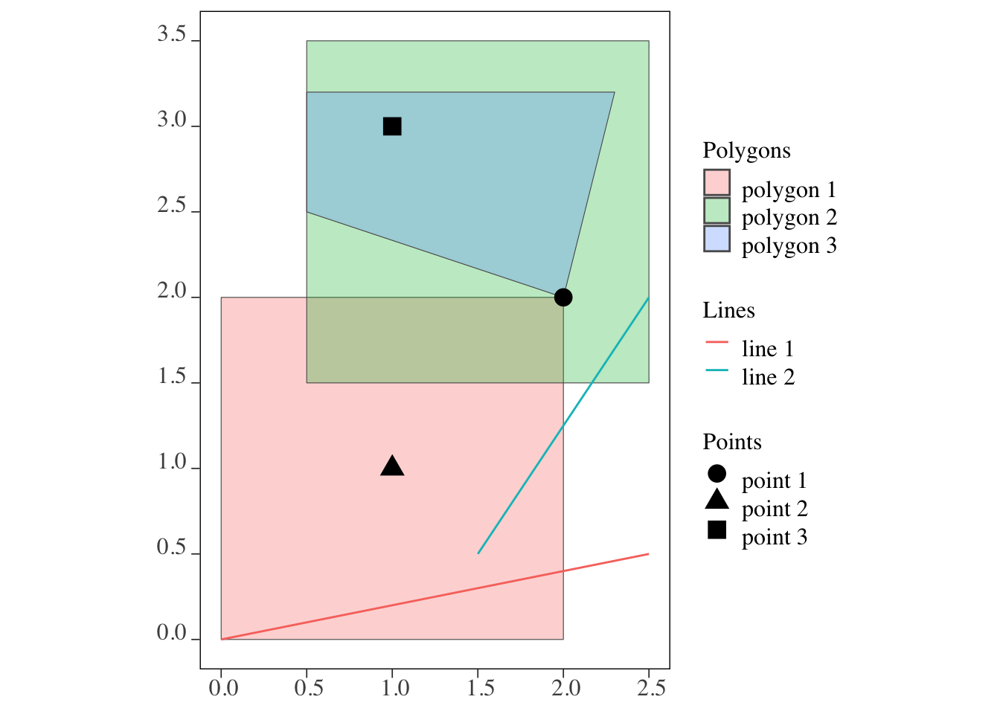
3.1.2 sf::st_intersects()
sf::st_intersects() identifies which sfg object in an sf (or sfc) intersects with sfg object(s) in another sf. For example, you can use the function to identify which well is located within which county. sf::st_intersects() is the most commonly used topological relation. It is important to understand what it does as it is the default topological relation used when performing spatial subsetting and joining, which we will cover later.
points and polygons (Figure 3.2)
Code
ggplot() +
geom_sf(data = polygons, aes(fill = polygon_name), alpha = 0.3) +
scale_fill_discrete(name = "Polygons") +
geom_sf(data = points, aes(shape = point_name), size = 4) +
scale_shape_discrete(name = "Points")
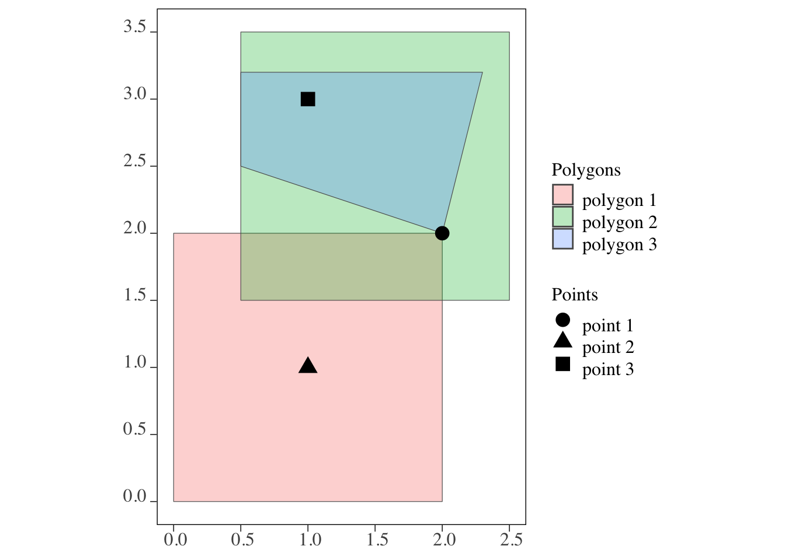
sf::st_intersects(points, polygons)Sparse geometry binary predicate list of length 3, where the predicate
was `intersects'
1: 1, 2, 3
2: 1
3: 2, 3As you can see, the output is a list of which polygon(s) each of the points intersect with. The numbers 1, 2, and 3 in the first row mean that 1st (polygon 1), 2nd (polygon 2), and 3rd (polygon 3) objects of the polygons intersect with the first point (point 1) of the points object. The fact that point 1 is considered to be intersecting with polygon 2 means that the area inside the border is considered a part of the polygon (of course).
If you would like the results of sf::st_intersects() in a matrix form with boolean values filling the matrix, you can add sparse = FALSE option.
sf::st_intersects(points, polygons, sparse = FALSE) [,1] [,2] [,3]
[1,] TRUE TRUE TRUE
[2,] TRUE FALSE FALSE
[3,] FALSE TRUE TRUElines and polygons (Figure 3.3)
Code
ggplot() +
geom_sf(data = polygons, aes(fill = polygon_name), alpha = 0.3) +
scale_fill_discrete(name = "Polygons") +
geom_sf(data = lines, aes(color = line_name)) +
scale_color_discrete(name = "Lines")
sf::st_intersects(lines, polygons)Sparse geometry binary predicate list of length 2, where the predicate
was `intersects'
1: 1
2: 1, 2The output is a list of which polygon(s) each of the lines intersect with. For example, line intersects with the 1st and 2nd elements of polygons, which are polygon 1 and polygon 2.
polygons and polygons (Figure 3.4)
Code
ggplot() +
geom_sf(data = polygons, aes(fill = polygon_name), alpha = 0.3) +
scale_fill_discrete(name = "Polygons")
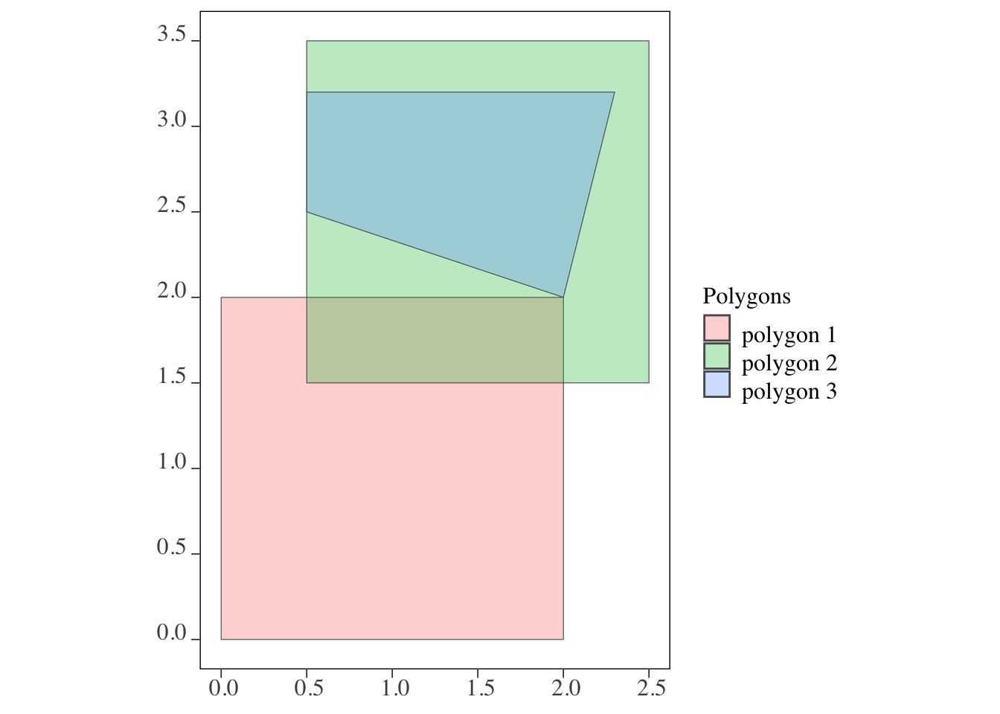
For polygons vs polygons interaction, sf::st_intersects() identifies any polygons that either touches (even at a point like polygons 1 and 3) or share some area.
sf::st_intersects(polygons, polygons)Sparse geometry binary predicate list of length 3, where the predicate
was `intersects'
1: 1, 2, 3
2: 1, 2, 3
3: 1, 2, 3Clearly, all of them interact with all the polygons (including themselves) in this case.
3.1.3 sf::st_is_within_distance()
This function identifies whether two spatial objects are within the distance you specify3.
3 For example, this function can be useful to identify neighbors. For example, you may want to find irrigation wells located around well \(i\) to label them as well \(i\)’s neighbor.
We will use two sets of points data.
points_set_1Simple feature collection with 5 features and 1 field
Geometry type: POINT
Dimension: XY
Bounding box: xmin: 0.2641607 ymin: 0.2094549 xmax: 0.789738 ymax: 0.9198815
CRS: NA
x id
1 POINT (0.2809702 0.7930091) 1
2 POINT (0.4907635 0.9198815) 2
3 POINT (0.789738 0.2094549) 3
4 POINT (0.2641607 0.3031891) 4
5 POINT (0.4544901 0.6499282) 5points_set_2Simple feature collection with 5 features and 1 field
Geometry type: POINT
Dimension: XY
Bounding box: xmin: 0.01389647 ymin: 0.2871567 xmax: 0.7799449 ymax: 0.8535346
CRS: NA
x id
1 POINT (0.2641116 0.8535346) 1
2 POINT (0.01389647 0.2871567) 2
3 POINT (0.5088085 0.6107668) 3
4 POINT (0.248774 0.5386513) 4
5 POINT (0.7799449 0.6599416) 5Here is how they are spatially distributed (Figure 3.5). Instead of circles of points, their corresponding id (or equivalently row number here) values are displayed.
Code
ggplot() +
geom_sf_text(data = points_set_1, aes(label = id), color = "red") +
geom_sf_text(data = points_set_2, aes(label = id), color = "blue")
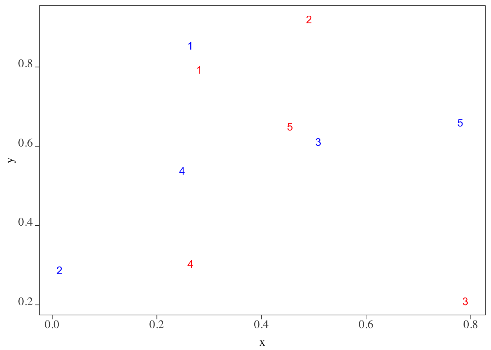
We want to know which of the blue points (points_set_2) are located within 0.2 from each of the red points (points_set_1). Figure 3.6 gives us the answer visually.
Code
#--- create 0.2 buffers around points in points_set_1 ---#
buffer_1 <- sf::st_buffer(points_set_1, dist = 0.2)
ggplot() +
geom_sf(data = buffer_1, color = "red", fill = NA) +
geom_sf_text(data = points_set_1, aes(label = id), color = "red") +
geom_sf_text(data = points_set_2, aes(label = id), color = "blue")
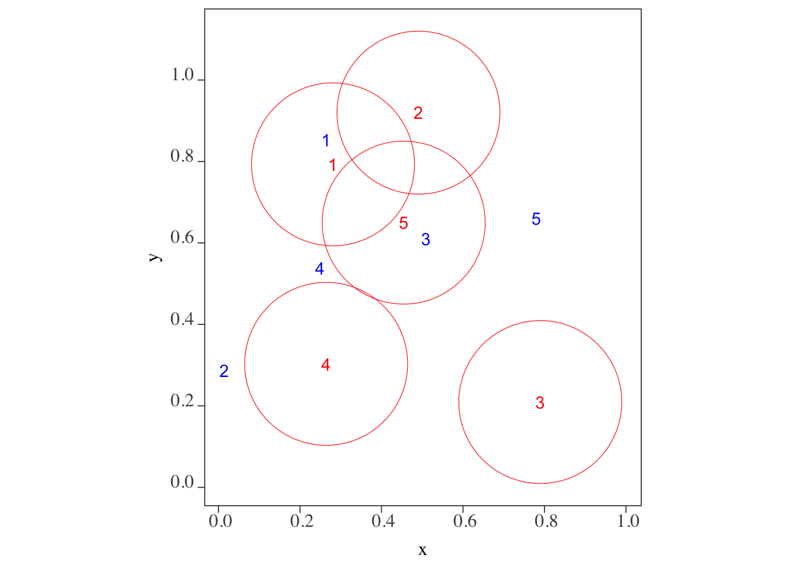
Confirm your visual inspection results with the outcome of the following code using sf::st_is_within_distance() function.
sf::st_is_within_distance(points_set_1, points_set_2, dist = 0.2)Sparse geometry binary predicate list of length 5, where the predicate
was `is_within_distance'
1: 1
2: (empty)
3: (empty)
4: (empty)
5: 33.2 Spatial cropping
3.2.1 Data preparation
Let’s import the following files:
#--- Kansas county borders ---#
KS_counties <-
readRDS("Data/KS_county_borders.rds") %>%
sf::st_transform(32614)
#--- High-Plains Aquifer boundary ---#
hpa <-
sf::st_read("Data/hp_bound2010.shp") %>%
.[1, ] %>%
sf::st_transform(st_crs(KS_counties))
#--- all the irrigation wells in KS ---#
KS_wells <-
readRDS("Data/Kansas_wells.rds") %>%
sf::st_transform(st_crs(KS_counties))
#--- US railroads in the Mid West region ---#
rail_roads_mw <- sf::st_read("Data/mw_railroads.geojson")3.2.2 Bounding box
We can use st_crop() to crop a spatial object to a spatial bounding box (extent) of another spatial object. The bounding box of an sf is a rectangle represented by the minimum and maximum of x and y that encompass/contain all the spatial objects in the sf. You can use st_bbox() to find the bounding box of an sf object. Let’s get the bounding box of irrigation wells in Kansas (KS_wells).
#--- get the bounding box of KS_wells ---#
(
bbox_KS_wells <- sf::st_bbox(KS_wells)
) xmin ymin xmax ymax
230332.0 4095052.5 887329.7 4433596.9 #--- check the class ---#
class(bbox_KS_wells)[1] "bbox"As you can see, sf::st_bbox() returns an object of class bbox. You cannot directly create a map using a bbox. So, let’s convert it to an sfc using sf::st_as_sfc():
KS_wells_bbox_sfc <- sf::st_as_sfc(bbox_KS_wells) Figure 3.7 shows the bounding box (red rectangle).
Code
ggplot() +
geom_sf(
data = KS_wells_bbox_sfc,
fill = NA,
color = "red",
linewidth = 1.2
) +
geom_sf(
data = KS_wells,
size = 0.4
) +
theme_void()
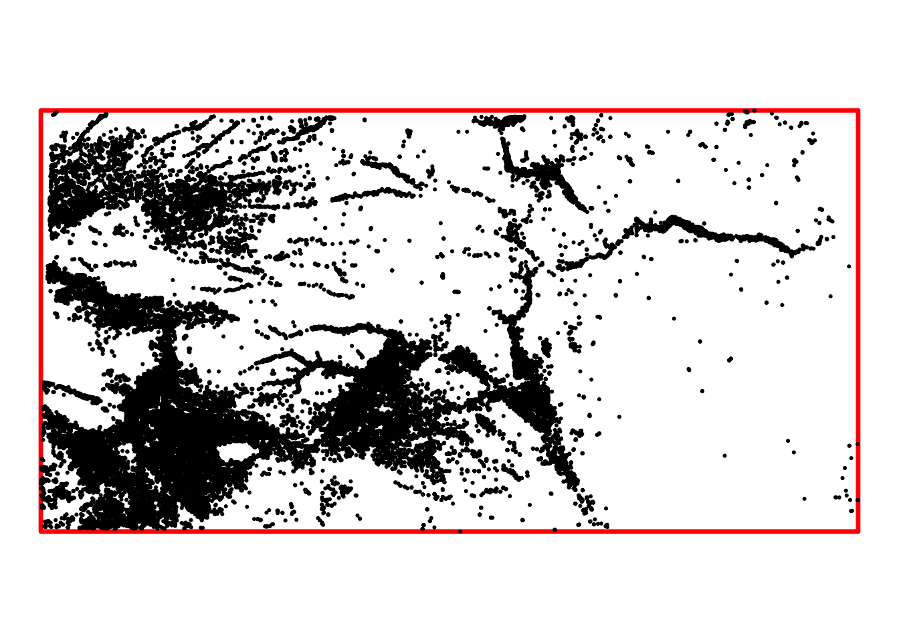
3.2.3 Spatial cropping
Let’s now crop High-Plains aquifer boundary (hpa) to the bounding box of Kansas wells (Figure 3.8).
Code
ggplot() +
geom_sf(data = KS_wells, size = 0.4) +
geom_sf(data = KS_wells_bbox_sfc, fill = NA, color = "red", linewidth = 1) +
geom_sf(data = hpa, fill = "blue", alpha = 0.3) +
theme_void()
hpa_cropped_to_KS <- sf::st_crop(hpa, KS_wells)Here is what the cropped version of hpa looks like (Figure 3.9):
Code
ggplot() +
geom_sf(data = KS_wells, size = 0.4) +
geom_sf(data = KS_wells_bbox_sfc, color = "red", linewidth = 1.2, fill = NA) +
geom_sf(data = hpa_cropped_to_KS, fill = "blue", alpha = 0.3) +
theme_void()
As you can see, the st_crop() operation cut the parts of hpa that are not intersecting with the bounding box of KS_wells.
3.3 Spatial subsetting
Spatial subsetting refers to operations that narrow down the geographic scope of a spatial object (source data) based on another spatial object (target data). We illustrate spatial subsetting using Kansas county borders (KS_counties), the boundary of the Kansas portion of the High-Plains Aquifer (hpa_cropped_to_KS), and agricultural irrigation wells in Kansas (KS_wells).
3.3.1 polygons (source) vs polygons (target)
Figure 3.10 shows the Kansas portion of the HPA and Kansas counties.
Code
ggplot() +
geom_sf(data = KS_counties) +
geom_sf(data = hpa_cropped_to_KS, fill = "blue", alpha = 0.3) +
theme_void()
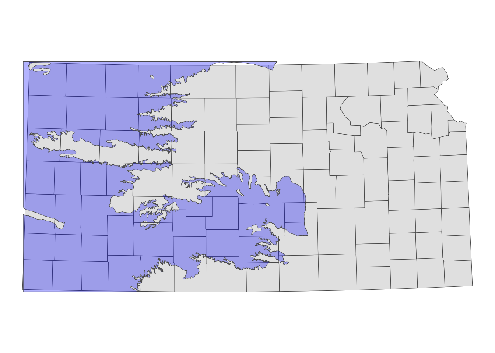
The goal is to select only the counties that intersect with the HPA boundary. Spatial subsetting of sf objects follows this syntax:
#--- this does not run ---#
sf_1[sf_2, ]where you are subsetting sf_1 based on sf_2. Instead of row numbers, you provide another sf object in place. The following code spatially subsets Kansas counties based on the HPA boundary.
counties_intersecting_hpa <- KS_counties[hpa_cropped_to_KS, ]Figure 3.11 presents counties in counties_intersecting_hpa and the cropped HPA boundary.
Code
ggplot() +
#--- add US counties layer ---#
geom_sf(data = counties_intersecting_hpa) +
#--- add High-Plains Aquifer layer ---#
geom_sf(data = hpa_cropped_to_KS, fill = "blue", alpha = 0.3) +
theme_void()
You can see that only the counties intersecting with the HPA boundary remain. This is because, when using the syntax sf_1[sf_2, ], the default topological relation is sf::st_intersects(). If objects in sf_1 intersect with any of the objects in sf_2, even slightly, they will remain after subsetting.
Sometimes, instead of removing non-intersecting observations, you may just want to flag whether two spatial objects intersect. To do this, you can first retrieve the IDs of the intersecting counties from counties_intersecting_hpa and then create a variable in the original dataset (KS_counties) that indicates whether an intersection occurs.
#--- check the intersections of HPA and counties ---#
intersecting_counties_list <- counties_intersecting_hpa$COUNTYFP
#--- assign true/false ---#
KS_counties <- dplyr::mutate(KS_counties, intersects_hpa = ifelse(COUNTYFP %in% intersecting_counties_list, TRUE, FALSE))
#--- take a look ---#
dplyr::select(KS_counties, COUNTYFP, intersects_hpa)Simple feature collection with 105 features and 2 fields
Geometry type: MULTIPOLYGON
Dimension: XY
Bounding box: xmin: 229253.5 ymin: 4094801 xmax: 890007.5 ymax: 4434288
Projected CRS: WGS 84 / UTM zone 14N
First 10 features:
COUNTYFP intersects_hpa geometry
1 133 FALSE MULTIPOLYGON (((806203.1 41...
2 075 TRUE MULTIPOLYGON (((233615.1 42...
3 123 FALSE MULTIPOLYGON (((544031.7 43...
4 189 TRUE MULTIPOLYGON (((273665.9 41...
5 155 TRUE MULTIPOLYGON (((546178.6 42...
6 129 TRUE MULTIPOLYGON (((229431.1 41...
7 073 FALSE MULTIPOLYGON (((717254.1 42...
8 023 TRUE MULTIPOLYGON (((239494.1 44...
9 089 TRUE MULTIPOLYGON (((542298.2 44...
10 059 FALSE MULTIPOLYGON (((804792.9 42...Other topological relations
As mentioned above, the default topological relation used in sf_1[sf_2, ] is sf::st_intersects(). However, you can specify other topological relations using the following syntax:
#--- this does not run ---#
sf_1[sf_2, op = topological_relation_type] For example, if you only want counties that are completely within the HPA boundary, you can use the following approach:
counties_within_hpa <- KS_counties[hpa_cropped_to_KS, op = st_within]Figure 3.12 shows the resulting set of counties.
Code
ggplot() +
geom_sf(data = counties_within_hpa) +
geom_sf(data = hpa_cropped_to_KS, fill = "blue", alpha = 0.3) +
theme_void()
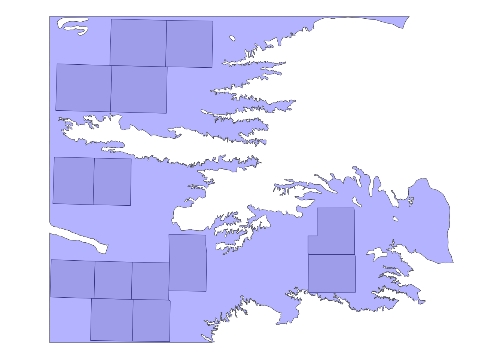
3.3.2 points (source) vs polygons (target)
The following map (Figure 3.13) shows the Kansas portion of the HPA and all the irrigation wells in Kansas. We can select only wells that reside within the HPA boundary using the same syntax as the above example.
Code
ggplot() +
geom_sf(data = hpa_cropped_to_KS, fill = "blue", alpha = 0.3) +
geom_sf(data = KS_wells, size = 0.1) +
theme_void()
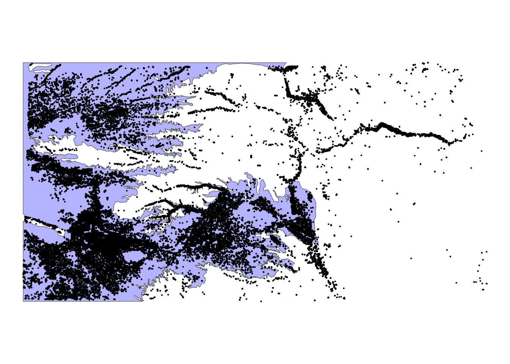
KS_wells_in_hpa <- KS_wells[hpa_cropped_to_KS, ]As you can see in Figure 3.14 below, only the wells that are inside (or intersect with) the HPA remained because the default topological relation is sf::st_intersects().
Code
ggplot() +
geom_sf(data = hpa_cropped_to_KS, fill = "blue", alpha = 0.3) +
geom_sf(data = KS_wells_in_hpa, size = 0.1) +
theme_void()
If you want to flag wells that intersect with HPA, use the following approach:
site_list <- KS_wells_in_hpa$site
(
KS_wells <- dplyr::mutate(KS_wells, in_hpa = ifelse(site %in% site_list, TRUE, FALSE))
)Simple feature collection with 37647 features and 3 fields
Geometry type: POINT
Dimension: XY
Bounding box: xmin: 230332 ymin: 4095052 xmax: 887329.7 ymax: 4433597
Projected CRS: WGS 84 / UTM zone 14N
First 10 features:
site af_used geometry in_hpa
1 1 232.099948 POINT (372548 4153588) TRUE
2 3 13.183940 POINT (353698.6 4419755) TRUE
3 5 99.187052 POINT (486771.7 4260027) TRUE
4 7 0.000000 POINT (248127.1 4296442) TRUE
5 8 145.520499 POINT (349813.2 4215310) TRUE
6 9 3.614535 POINT (612277.6 4322077) FALSE
7 11 188.423543 POINT (267030.7 4381364) TRUE
8 12 77.335960 POINT (761774.6 4339039) FALSE
9 15 0.000000 POINT (560570.3 4235763) TRUE
10 17 167.819034 POINT (387315.1 4175007) TRUE3.3.3 lines (source) vs polygons (target)
Figure 3.15 shows the Kansas counties (in red) and U.S. railroads in the Mid West region(in blue).
Code
ggplot() +
geom_sf(data = KS_counties, fill = NA, color = "red") +
geom_sf(data = rail_roads_mw, color = "blue", linewidth = 0.3) +
theme_void()
We can select only the railroads that intersect with Kansas.
railroads_KS <- rail_roads_mw[KS_counties, ]As you can see in Figure 3.16 below, only the railroads that intersect with Kansas were selected. Note the lines that go beyond the Kansas boundary are also selected. Remember, the default is sf::st_intersect().
Code
tm_shape(railroads_KS) +
tm_lines(col = "blue") +
tm_shape(KS_counties) +
tm_polygons(alpha = 0) +
tm_layout(frame = FALSE)
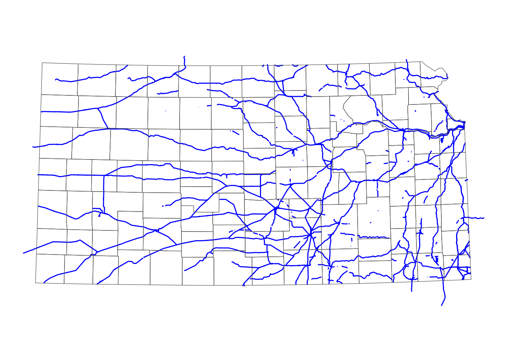
If you would like the lines beyond the state boundary to be cut out but the intersecting parts of those lines to remain, use sf::st_intersection(), which is explained in Section 3.5.1.
If you want to flag railroads that intersect with Kansas counties in railroads, use the following approach:
#--- get the list of lines ---#
lines_list <- railroads_KS$LINEARID
#--- railroads ---#
rail_roads_mw <- dplyr::mutate(rail_roads_mw, intersect_ks = ifelse(LINEARID %in% lines_list, TRUE, FALSE))
#--- take a look ---#
dplyr::select(rail_roads_mw, LINEARID, intersect_ks)Simple feature collection with 100661 features and 2 fields
Geometry type: MULTILINESTRING
Dimension: XY
Bounding box: xmin: -414024 ymin: 3692172 xmax: 2094886 ymax: 5446589
Projected CRS: WGS 84 / UTM zone 14N
First 10 features:
LINEARID intersect_ks geometry
1 11050905483 FALSE MULTILINESTRING ((1250147 3...
2 11050905484 FALSE MULTILINESTRING ((1250147 3...
3 11050905485 FALSE MULTILINESTRING ((1250429 3...
4 11050905486 FALSE MULTILINESTRING ((1248249 3...
5 11050905487 FALSE MULTILINESTRING ((1248249 3...
6 11050905488 FALSE MULTILINESTRING ((1249095 3...
7 11050905489 FALSE MULTILINESTRING ((1250429 3...
8 11050905490 FALSE MULTILINESTRING ((1250383 3...
9 11050905492 FALSE MULTILINESTRING ((1250329 3...
10 11050905494 FALSE MULTILINESTRING ((1250033 3...3.3.4 polygons (source) vs points (target)
Code
ggplot() +
geom_sf(data = KS_counties, fill = NA) +
geom_sf(data = KS_wells_in_hpa, fill = NA, size = 0.3) +
theme_void()
Figure 3.17 shows the Kansas counties and irrigation wells in Kansas that overlie HPA. We can select only the counties that intersect with at least one well.
KS_counties_intersected <- KS_counties[KS_wells_in_hpa, ] As you can see in Figure 3.18 below, only the counties that intersect with at least one well remained.
Code
ggplot() +
geom_sf(data = KS_counties, fill = NA) +
geom_sf(data = KS_counties_intersected, fill = "blue", alpha = 0.4) +
geom_sf(data = KS_wells_in_hpa, fill = NA, size = 0.3) +
theme_void()
3.4 Spatial join
A spatial join refers to spatial operations that involve the following steps:
- Overlay one spatial layer (target layer) onto another (source layer).
- For each observation in the target layer:
- Identify which objects in the source layer it geographically intersects with (or has another specified topological relationship).
- Extract values associated with the intersecting objects in the source layer, summarizing if necessary.
- Assign the extracted values to the corresponding objects in the target layer.
We can classify spatial join into four categories by the type of the underlying spatial objects:
- vector-vector: vector data (target) against vector data (source)
- vector-raster: vector data (target) against raster data (source)
- raster-vector: raster data (target) against vector data (source)
- raster-raster: raster data (target) against raster data (source)
Among these four types, our focus here is on the first case, vector-vector. The second case will be discussed in Chapter 5. The third and fourth cases are not covered in this book, as the target data is almost always vector data (e.g., cities or farm fields as points, political boundaries as polygons, etc.).
The vector-vector category can be further divided into subcategories depending on the type of spatial object: point, line, or polygon. In this context, we will exclude spatial joins involving lines. This is because line objects are rarely used as observation units in subsequent analyses or as the source data for extracting values.4
4 For example, in Section 1.4, we did not extract any attribute values from the railroads. Instead, we calculated the travel length of the railroads, meaning the geometry of the railroads was of interest rather than the values associated with them.
Below is a list of the types of spatial joins we will cover:
- points (target) against polygons (source)
- polygons (target) against points (source)
- polygons (target) against polygons (source)
3.4.1 Spatial join with sf::st_join()
To perform spatial join, we can use the sf::st_join() function, with the following syntax:
#--- this does not run ---#
sf::st_join(target_sf, source_sf)Similar to spatial subsetting, the default topological relation is sf::st_intersects().
3.4.1.1 Case 1: points (target) vs polygons (source)
In this case, for each observation (point) in the target data, it identifies which polygon in the source data it intersects with and then assigns the value associated with the polygon to the point.5
5 A practical example of this case is shown in Demonstration 1 of Chapter 1.
We use the Kansas irrigation well data (points) and Kansas county boundary data (polygons) for a demonstration. Our goal is to assign the county-level corn price information from the Kansas county data to wells. First let me create and add a fake county-level corn price variable to the Kansas county data.
Figure 3.19 presents Kansas counties color-differentiated by the fake corn price.
Code
ggplot(KS_corn_price) +
geom_sf(aes(fill = corn_price)) +
scale_fill_viridis_c() +
theme_void()
For this particular context, the following code will do the job:
#--- spatial join ---#
(
KS_wells_County <- sf::st_join(KS_wells, KS_corn_price)
)Simple feature collection with 37647 features and 5 fields
Geometry type: POINT
Dimension: XY
Bounding box: xmin: 230332 ymin: 4095052 xmax: 887329.7 ymax: 4433597
Projected CRS: WGS 84 / UTM zone 14N
First 10 features:
site af_used in_hpa COUNTYFP corn_price geometry
1 1 232.099948 TRUE 069 3.556731 POINT (372548 4153588)
2 3 13.183940 TRUE 039 3.449038 POINT (353698.6 4419755)
3 5 99.187052 TRUE 165 3.287500 POINT (486771.7 4260027)
4 7 0.000000 TRUE 199 3.644231 POINT (248127.1 4296442)
5 8 145.520499 TRUE 055 3.832692 POINT (349813.2 4215310)
6 9 3.614535 FALSE 143 3.799038 POINT (612277.6 4322077)
7 11 188.423543 TRUE 181 3.590385 POINT (267030.7 4381364)
8 12 77.335960 FALSE 177 3.550000 POINT (761774.6 4339039)
9 15 0.000000 TRUE 159 3.610577 POINT (560570.3 4235763)
10 17 167.819034 TRUE 069 3.556731 POINT (387315.1 4175007)You can see from Figure 3.20 that all the wells inside the same county have the same corn price value.
Code
ggplot() +
geom_sf(data = KS_counties) +
geom_sf(data = KS_wells_County, aes(color = corn_price)) +
scale_color_viridis_c() +
theme_void()
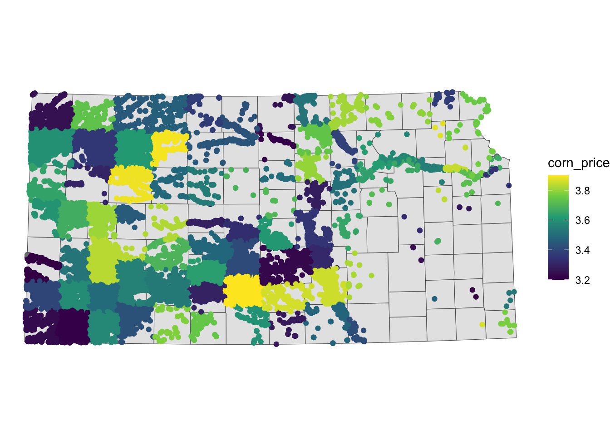
We can also confirm that the corn_price value associated with all the wells in a single county is identical with the corn_price value associated with that county in the original corn price data (KS_corn_price).
3.4.1.2 Case 2: polygons (target) vs points (source)
In this case, for each observation (polygon) in the target data, it identifies which observations (points) in the source data intersect with it, and then assigns the values associated with those points to the polygon (A practical example of this case is shown in Demonstration 2 of Chapter 1.).
Code
ggplot() +
geom_sf(data = KS_counties) +
geom_sf(data = KS_wells, aes(color = af_used), size = 0.2) +
scale_color_viridis_c(name = "Groundwater Pumping (acre-feet)") +
theme_void() +
theme(legend.position = "bottom")
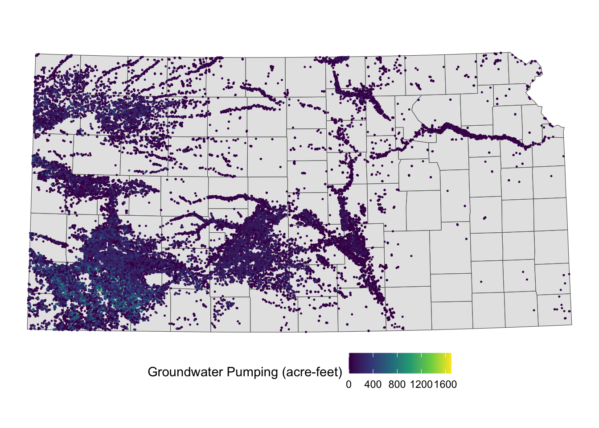
For instance, if you are conducting a county-level analysis and want to calculate the total groundwater pumping for each county, the target data would be KS_counties, and the source data would be KS_wells (Figure 3.21).
#--- spatial join ---#
KS_County_wells <- sf::st_join(KS_counties, KS_wells)
#--- take a look ---#
dplyr::select(KS_County_wells, COUNTYFP, site, af_used)Simple feature collection with 37652 features and 3 fields
Geometry type: MULTIPOLYGON
Dimension: XY
Bounding box: xmin: 229253.5 ymin: 4094801 xmax: 890007.5 ymax: 4434288
Projected CRS: WGS 84 / UTM zone 14N
First 10 features:
COUNTYFP site af_used geometry
1 133 53861 17.01790 MULTIPOLYGON (((806203.1 41...
1.1 133 70592 0.00000 MULTIPOLYGON (((806203.1 41...
2 075 328 394.04513 MULTIPOLYGON (((233615.1 42...
2.1 075 336 80.65036 MULTIPOLYGON (((233615.1 42...
2.2 075 436 568.25359 MULTIPOLYGON (((233615.1 42...
2.3 075 1007 215.80416 MULTIPOLYGON (((233615.1 42...
2.4 075 1170 0.00000 MULTIPOLYGON (((233615.1 42...
2.5 075 1192 77.39120 MULTIPOLYGON (((233615.1 42...
2.6 075 1249 0.00000 MULTIPOLYGON (((233615.1 42...
2.7 075 1300 320.22612 MULTIPOLYGON (((233615.1 42...As seen in the resulting dataset, each unique polygon-point intersection forms an observation. For each polygon, there will be as many observations as there are wells intersecting with that polygon. After joining the two layers, you can calculate statistics for each polygon (in this case, each county). Since the goal is to calculate groundwater extraction by county, the following code will accomplish this:
KS_County_wells %>%
dplyr::group_by(COUNTYFP) %>%
dplyr::summarize(af_used = sum(af_used, na.rm = TRUE)) Simple feature collection with 105 features and 2 fields
Geometry type: MULTIPOLYGON
Dimension: XY
Bounding box: xmin: 229253.5 ymin: 4094801 xmax: 890007.5 ymax: 4434288
Projected CRS: WGS 84 / UTM zone 14N
# A tibble: 105 × 3
COUNTYFP af_used geometry
<fct> <dbl> <MULTIPOLYGON [m]>
1 001 0 (((806387 4191583, 805512 4215779, 844240.9 4217265, 845100…
2 003 0 (((804971.3 4254894, 843634.8 4256415, 844240.9 4217265, 80…
3 005 771. (((794798 4394875, 814054.6 4395649, 833328.7 4396412, 8396…
4 007 4972. (((498886 4147060, 547336.9 4147260, 547367.8 4137622, 5575…
5 009 61083. (((497132.8 4283127, 544688.2 4283265, 545236.6 4281565, 54…
6 011 0 (((844767.7 4183342, 845100.4 4193068, 844240.9 4217265, 88…
7 013 480. (((774189.2 4432752, 774491.2 4432762, 812462.5 4434180, 81…
8 015 343. (((662406.7 4197742, 661982.8 4217157, 689364.6 4217517, 71…
9 017 0 (((688956.3 4246711, 690085.5 4266038, 730694.2 4267016, 73…
10 019 0 (((719369.2 4131329, 769067.5 4132390, 770145.1 4099095, 76…
# ℹ 95 more rowsIt is just as easy to get other types of statistics by simply modifying the dplyr::summarize() part.
3.4.1.3 Case 3: polygons (target) vs polygons (source)
In this case, sf::st_join(target_sf, source_sf) returns all the unique polygon-polygon intersections, with the attributes from source_sf attached to the intersecting polygons.
We will use county-level corn acres data in Iowa for 2018 from USDA NASS6 and Hydrologic Units. Our objective is to estimate corn acres by HUC units based on county-level corn acres data.7
6 See Section 8.1 for instructions on downloading Quick Stats data from within R.
7 There will be substantial measurement errors because the source polygons (corn acres by county) are large compared to the target polygons (HUC units). However, this serves as a useful illustration of a polygon-polygon join.
We first import the Iowa corn acre data (Figure 3.22 is the map of Iowa counties color-differentiated by corn acres):
#--- IA boundary ---#
IA_corn <- readRDS("Data/IA_corn.rds")
#--- take a look ---#
IA_cornSimple feature collection with 93 features and 3 fields
Geometry type: MULTIPOLYGON
Dimension: XY
Bounding box: xmin: 203228.6 ymin: 4470941 xmax: 736832.9 ymax: 4822687
Projected CRS: NAD83 / UTM zone 15N
First 10 features:
county_code year acres geometry
1 083 2018 183500 MULTIPOLYGON (((458997 4711...
2 141 2018 167000 MULTIPOLYGON (((267700.8 47...
3 081 2018 184500 MULTIPOLYGON (((421231.2 47...
4 019 2018 189500 MULTIPOLYGON (((575285.6 47...
5 023 2018 165500 MULTIPOLYGON (((497947.5 47...
6 195 2018 111500 MULTIPOLYGON (((459791.6 48...
7 063 2018 110500 MULTIPOLYGON (((345214.3 48...
8 027 2018 183000 MULTIPOLYGON (((327408.5 46...
9 121 2018 70000 MULTIPOLYGON (((396378.1 45...
10 077 2018 107000 MULTIPOLYGON (((355180.1 46...Code
ggplot(IA_corn) +
geom_sf(aes(fill = acres)) +
scale_fill_viridis_c() +
theme_void()
Now import the HUC units data (Figure 3.23 presents the map of HUC units):
#--- import HUC units ---#
HUC_IA <-
sf::st_read("Data/huc250k.shp") %>%
dplyr::select(HUC_CODE) %>%
#--- reproject to the CRS of IA ---#
sf::st_transform(st_crs(IA_corn)) %>%
#--- select HUC units that overlaps with IA ---#
.[IA_corn, ]Code
ggplot(HUC_IA) +
geom_sf() +
theme_void()
Figure 3.24 presents a map of Iowa counties superimposed on the HUC units:
Code
ggplot() +
geom_sf(data = HUC_IA) +
geom_sf(data = IA_corn, aes(fill = acres), alpha = 0.4) +
scale_fill_viridis_c() +
theme_void()
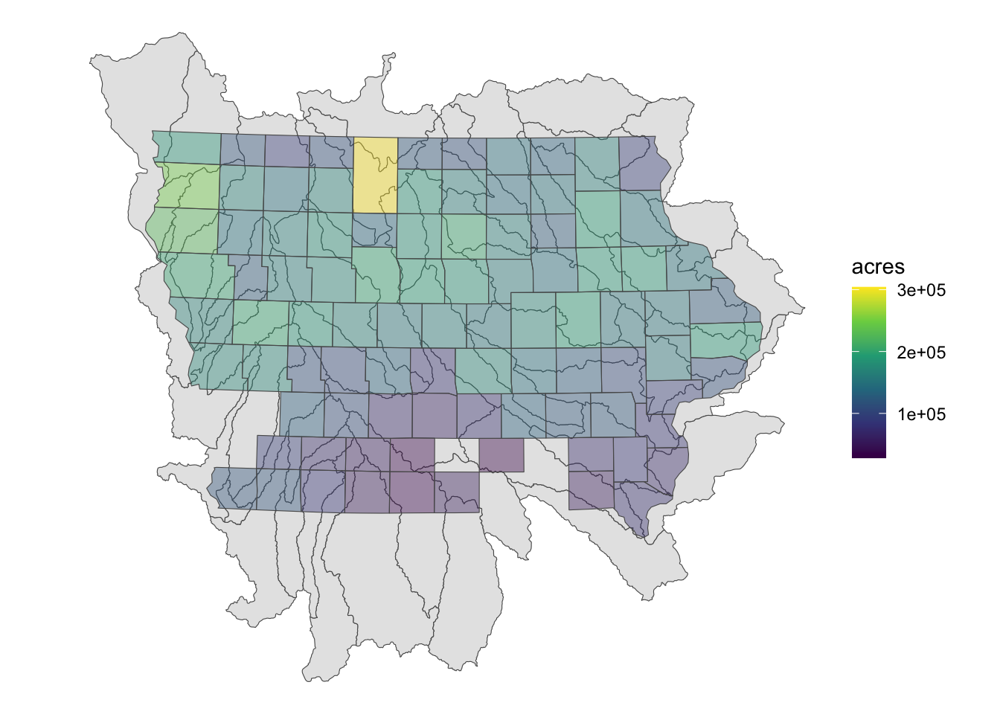
Spatial join using sf::st_join() will produce the following:
(
HUC_joined <- sf::st_join(HUC_IA, IA_corn)
)Simple feature collection with 349 features and 4 fields
Geometry type: POLYGON
Dimension: XY
Bounding box: xmin: 154941.7 ymin: 4346327 xmax: 773299.8 ymax: 4907735
Projected CRS: NAD83 / UTM zone 15N
First 10 features:
HUC_CODE county_code year acres geometry
608 10170203 149 2018 226500 POLYGON ((235551.4 4907513,...
608.1 10170203 167 2018 249000 POLYGON ((235551.4 4907513,...
608.2 10170203 193 2018 201000 POLYGON ((235551.4 4907513,...
608.3 10170203 119 2018 184500 POLYGON ((235551.4 4907513,...
621 07020009 063 2018 110500 POLYGON ((408580.7 4880798,...
621.1 07020009 109 2018 304000 POLYGON ((408580.7 4880798,...
621.2 07020009 189 2018 120000 POLYGON ((408580.7 4880798,...
627 10170204 141 2018 167000 POLYGON ((248115.2 4891652,...
627.1 10170204 143 2018 116000 POLYGON ((248115.2 4891652,...
627.2 10170204 167 2018 249000 POLYGON ((248115.2 4891652,...Each intersecting HUC-county combination becomes a separate observation, with the resulting geometry being the same as that of the HUC unit. To illustrate this, let’s take a closer look at one of the HUC units. The HUC unit with HUC_CODE ==10170203 intersects with four County.
#--- get the HUC unit with `HUC_CODE ==10170203` ---#
(
temp_HUC_county <- filter(HUC_joined, HUC_CODE == 10170203)
)Simple feature collection with 4 features and 4 fields
Geometry type: POLYGON
Dimension: XY
Bounding box: xmin: 154941.7 ymin: 4709628 xmax: 248115.2 ymax: 4907735
Projected CRS: NAD83 / UTM zone 15N
HUC_CODE county_code year acres geometry
608 10170203 149 2018 226500 POLYGON ((235551.4 4907513,...
608.1 10170203 167 2018 249000 POLYGON ((235551.4 4907513,...
608.2 10170203 193 2018 201000 POLYGON ((235551.4 4907513,...
608.3 10170203 119 2018 184500 POLYGON ((235551.4 4907513,...All of the four observations in temp_HUC_county has the identical geometry (Figure 3.25 shows this visually.).
Moreover, they are identical with the geometry of the intersecting HUC unit (the HUC unit with HUC_CODE ==10170203):
identical(
#--- geometry of the one of the observations from the joined object ---#
temp_HUC_county[1, ]$geometry,
#--- original HUC geometry ---#
dplyr::filter(HUC_IA, HUC_CODE == 10170203) %>% pull(geometry)
)[1] TRUESo, all four observations have identical geometry, which corresponds to the geometry of the HUC unit. This indicates that sf::st_join() does not retain information about the extent of the intersection between the HUC unit and the four counties. Keep in mind that the default behavior uses sf::st_intersects(), which only checks whether the spatial objects intersect, without providing further details.
If you are calculating a simple average of corn acres and are not concerned with the degree of spatial overlap, this method works just fine. However, if you want to compute an area-weighted average, the information provided is insufficient. You will learn how to calculate the area-weighted average in the next subsection.
3.4.2 Spatial join and summary in one step
In Section 3.4.1.2, we first joined KS_counties and KS_wells uusing sf::st_join() and then applied dplyr::summarize() to find total groundwater use per county. This two-step procedure can be done in one step using aggregate() with the summarizing function specified for the FUN option.
aggregate(source layer, target layer, FUN = function)Since we are trying to find total groundwater use for each county, the target layer is KS_counties, the source layer is KS_wells, which has af_used, and the function to summarize is sum(). So, the following code will replicate what we just did above:
#--- sum ---#
aggregate(KS_wells, KS_counties, FUN = sum)Simple feature collection with 105 features and 3 fields
Geometry type: MULTIPOLYGON
Dimension: XY
Bounding box: xmin: 229253.5 ymin: 4094801 xmax: 890007.5 ymax: 4434288
Projected CRS: WGS 84 / UTM zone 14N
First 10 features:
site af_used in_hpa geometry
1 124453 1.701790e+01 0 MULTIPOLYGON (((806203.1 41...
2 12514550 6.261704e+04 159 MULTIPOLYGON (((233615.1 42...
3 1964254 1.737791e+03 0 MULTIPOLYGON (((544031.7 43...
4 42442400 3.023589e+05 1056 MULTIPOLYGON (((273665.9 41...
5 68068173 6.110576e+04 1294 MULTIPOLYGON (((546178.6 42...
6 15756801 9.664610e+04 477 MULTIPOLYGON (((229431.1 41...
7 149202 0.000000e+00 0 MULTIPOLYGON (((717254.1 42...
8 17167377 5.750807e+04 592 MULTIPOLYGON (((239494.1 44...
9 1809003 2.201696e+03 15 MULTIPOLYGON (((542298.2 44...
10 160064 4.571102e+00 0 MULTIPOLYGON (((804792.9 42...Notice that the sum() function was applied to all the columns in KS_wells, including site id number. So, you might want to select variables you want to join before you apply the aggregate() function like this:
Simple feature collection with 105 features and 1 field
Geometry type: MULTIPOLYGON
Dimension: XY
Bounding box: xmin: 229253.5 ymin: 4094801 xmax: 890007.5 ymax: 4434288
Projected CRS: WGS 84 / UTM zone 14N
First 10 features:
af_used geometry
1 1.701790e+01 MULTIPOLYGON (((806203.1 41...
2 6.261704e+04 MULTIPOLYGON (((233615.1 42...
3 1.737791e+03 MULTIPOLYGON (((544031.7 43...
4 3.023589e+05 MULTIPOLYGON (((273665.9 41...
5 6.110576e+04 MULTIPOLYGON (((546178.6 42...
6 9.664610e+04 MULTIPOLYGON (((229431.1 41...
7 0.000000e+00 MULTIPOLYGON (((717254.1 42...
8 5.750807e+04 MULTIPOLYGON (((239494.1 44...
9 2.201696e+03 MULTIPOLYGON (((542298.2 44...
10 4.571102e+00 MULTIPOLYGON (((804792.9 42...3.4.3 Spatial join with other topological relations
By default, sf::st_join() uses sf::st_intersects() as the topological relationship. We can use a different topological relationshiop like below:
sf::st_join(sf_1, sf_2, join = \(x, y) st_*(x, y, ...))where x and y refer to sf_1 and sf_2, respectively. At ..., you can specify options for st_*() you are using. For example, if you are using st_is_within_distance(), you need to specificy the dist option like below:
sf::st_join(sf_1, sf_2, join = \(x, y) st_is_within_distance(x, y, dist = 5))For demonstration, let’s use points_set_1 and points_set_2 similar to what we used in Section 3.1.3 (Figure 3.26 shows which points in points_set_2 are within 0.2 length of the points in points_set_1.).
Code
ggplot() +
geom_sf(data = sf::st_buffer(points_set_1, dist = 0.2), color = "red", fill = NA) +
geom_sf_text(data = points_set_1, aes(label = id_1), color = "red") +
geom_sf_text(data = points_set_2, aes(label = id_2), color = "blue")
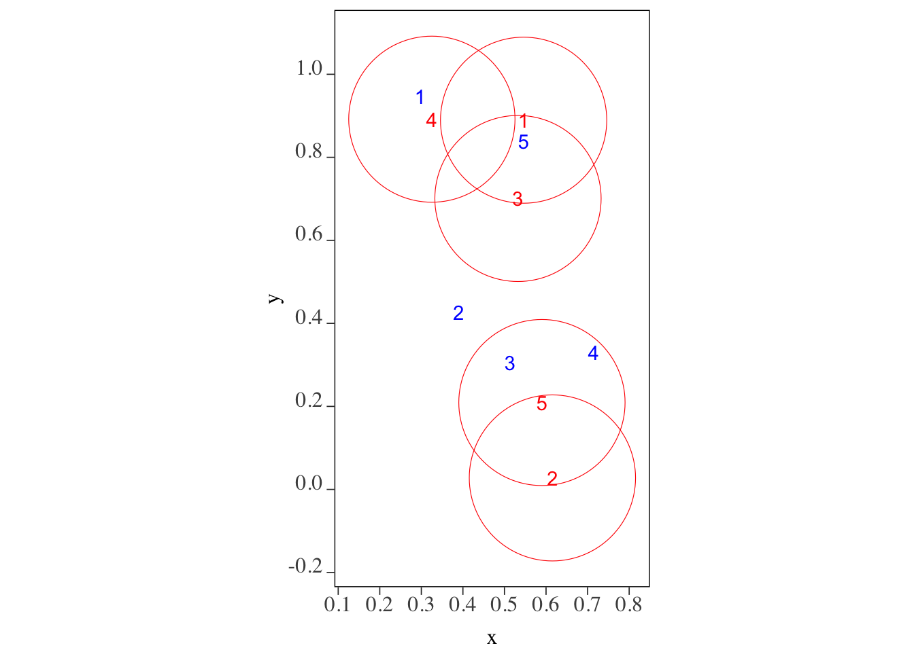
Let’s join points_set_2 with points_set_1 with the following code:
sf::st_join(points_set_1, points_set_2, join = \(x, y) st_is_within_distance(x, y, dist = 0.2))Simple feature collection with 6 features and 2 fields
Geometry type: POINT
Dimension: XY
Bounding box: xmin: 0.3253026 ymin: 0.02772751 xmax: 0.6152958 ymax: 0.891845
CRS: NA
id_1 id_2 x
1 1 5 POINT (0.5460344 0.8894436)
2 2 NA POINT (0.6152958 0.02772751)
3 3 5 POINT (0.5325007 0.7008456)
4 4 1 POINT (0.3253026 0.891845)
5 5 3 POINT (0.5900944 0.2093319)
5.1 5 4 POINT (0.5900944 0.2093319)As you can see the 1st and 3rd points in points_set_1 are within 0.2 distance from the 5th point in points_set_2 and are joined together. The 5th point in points_set_1 is matched with the 3rd and 4th points in points_set_2. The join results are consistent with the visual inspection of Figure 3.26.
3.5 Spatial intersection (cropping join)
Sometimes, you may need to crop spatial objects by polygon boundaries. For instance, in the demonstration in Section 1.4, we calculated the total length of railroads within each county by trimming the parts of the railroads that extended beyond county boundaries. Similarly, we cannot find area-weighted averages using sf::st_join() alone because it does not provide information about how much of each HUC unit intersects with a county. However, if we can obtain the geometry of the intersecting portions of the HUC unit and the county, we can calculate their areas, allowing us to compute area-weighted averages of the joined attributes.
For these purposes, we can use sf::st_intersection(). Below, we illustrate how sf::st_intersection() works for line-polygon and polygon-polygon intersections (using data generated in Section 3.1). Intersections involving points with sf::st_intersection() are equivalent to using sf::st_join() since points have neither length nor area (nothing to crop). Therefore, they are not discussed here.
3.5.1 sf::st_intersection()
While sf::st_intersects() returns the indices of intersecting objects, sf::st_intersection() returns the actual intersecting spatial objects, with the non-intersecting parts of the sf objects removed. Additionally, the attribute values from the source sf are merged with the intersecting geometries (sfg) in the target sf.
Code
ggplot() +
geom_sf(data = polygons, aes(fill = polygon_name), alpha = 0.3) +
scale_fill_discrete(name = "Polygons") +
geom_sf(data = lines, aes(color = line_name)) +
scale_color_discrete(name = "Lines") 
We will now explore how this works for both line-polygon and polygon-polygon intersections, using the same toy examples we used to demonstrate how sf::st_intersects() functions (Figure 3.27 shows the lines and polygons).
lines and polygons
The following code finds the intersection of the lines and the polygons.
(
intersections_lp <-
sf::st_intersection(lines, polygons) %>%
dplyr::mutate(int_name = paste0(line_name, "-", polygon_name))
)Simple feature collection with 3 features and 3 fields
Geometry type: LINESTRING
Dimension: XY
Bounding box: xmin: 0 ymin: 0 xmax: 2.5 ymax: 2
CRS: NA
line_name polygon_name x int_name
1 line 1 polygon 1 LINESTRING (0 0, 2 0.4) line 1-polygon 1
2 line 2 polygon 1 LINESTRING (1.5 0.5, 2 1.25) line 2-polygon 1
2.1 line 2 polygon 2 LINESTRING (2.166667 1.5, 2... line 2-polygon 2As shown in the output, each intersection between the lines and polygons becomes an observation (e.g., line 1-polygon 1, line 2-polygon 1, and line 2-polygon 2). Any part of the lines that does not intersect with a polygon is removed and does not appear in the returned sf object. To confirm this, see Figure 3.28 below:
Code
ggplot() +
#--- here are all the original polygons ---#
geom_sf(data = polygons, aes(fill = polygon_name), alpha = 0.3) +
#--- here is what is returned after st_intersection ---#
geom_sf(data = intersections_lp, aes(color = int_name), size = 1.5)
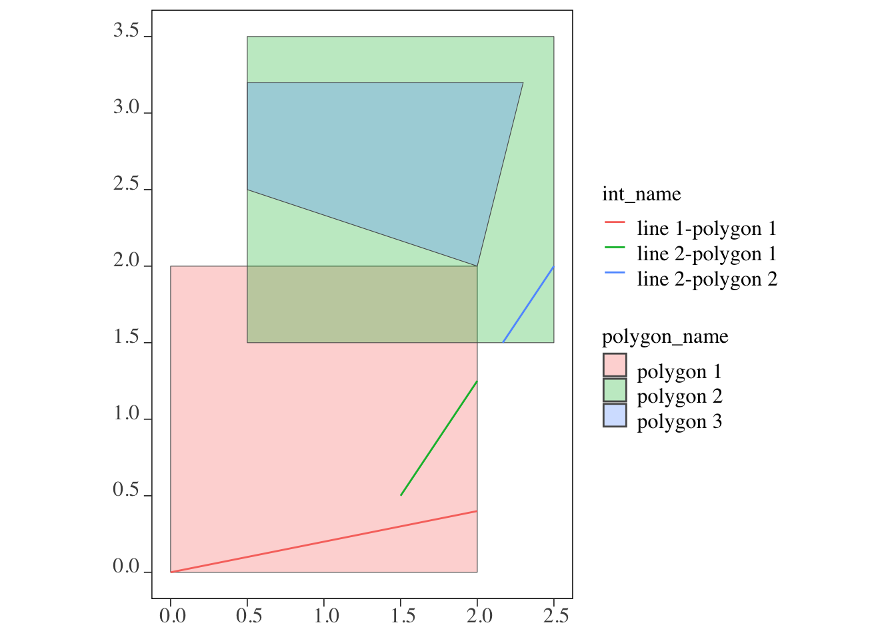
This approach also allows us to calculate the length of the line segments that are fully contained within the polygons, similar to what we did in Section 1.4. Additionally, the attributes (e.g., polygon_name) from the source sf (the polygons) are merged with their intersecting lines. As a result, sf::st_intersection() not only transforms the original geometries but also joins the attributes, which is why I refer to this as a “cropping join.”
polygons and polygons
The following code finds the intersection of polygon 1 and polygon 3 with polygon 2.
(
intersections_pp <-
sf::st_intersection(polygons[c(1,3), ], polygons[2, ]) %>%
dplyr::mutate(int_name = paste0(polygon_name, "-", polygon_name.1))
)Simple feature collection with 2 features and 3 fields
Geometry type: POLYGON
Dimension: XY
Bounding box: xmin: 0.5 ymin: 1.5 xmax: 2.3 ymax: 3.2
CRS: NA
polygon_name polygon_name.1 x
1 polygon 1 polygon 2 POLYGON ((2 2, 2 1.5, 0.5 1...
3 polygon 3 polygon 2 POLYGON ((0.5 3.2, 2.3 3.2,...
int_name
1 polygon 1-polygon 2
3 polygon 3-polygon 2As shown in Figure 3.29, each intersection between polygons 1 and 3 with polygon 2 becomes a separate observation (e.g., polygon 1-polygon 2 and polygon 3-polygon 2). Similar to the lines-polygons case, the non-intersecting parts of polygons 1 and 3 are removed and do not appear in the returned sf. Later, we will explore how sf::st_intersection() can be used to calculate area-weighted values from the intersecting polygons with the help of sf::st_area().
Code
ggplot() +
#--- here are all the original polygons ---#
geom_sf(data = polygons, aes(fill = polygon_name), alpha = 0.3) +
#--- here is what is returned after st_intersection ---#
geom_sf(data = intersections_pp, aes(fill = int_name))
3.5.2 Area-weighted average
Let’s now return to the example of HUC units and county-level corn acres data from Section 3.4. This time, we aim to calculate the area-weighted average of corn acres, rather than just the simple average.
Using sf::st_intersection(), we can divide each HUC polygon into parts based on the boundaries of the intersecting counties. For each HUC polygon, the intersecting counties are identified, and the polygon is split according to these boundaries.
(
HUC_intersections <-
sf::st_intersection(HUC_IA, IA_corn) %>%
dplyr::mutate(huc_county = paste0(HUC_CODE, "-", county_code))
)Simple feature collection with 349 features and 5 fields
Geometry type: GEOMETRY
Dimension: XY
Bounding box: xmin: 203228.6 ymin: 4470941 xmax: 736832.9 ymax: 4822687
Projected CRS: NAD83 / UTM zone 15N
First 10 features:
HUC_CODE county_code year acres geometry
732 07080207 083 2018 183500 POLYGON ((482923.9 4711643,...
803 07080205 083 2018 183500 POLYGON ((499725.6 4696873,...
826 07080105 083 2018 183500 POLYGON ((461853.2 4682925,...
627 10170204 141 2018 167000 POLYGON ((269364.9 4793311,...
687 10230003 141 2018 167000 POLYGON ((271504.3 4754685,...
731 10230002 141 2018 167000 POLYGON ((267684.6 4790972,...
683 07100003 081 2018 184500 POLYGON ((435951.2 4789348,...
686 07080203 081 2018 184500 MULTIPOLYGON (((459303.2 47...
732.1 07080207 081 2018 184500 POLYGON ((429573.1 4779788,...
747 07100005 081 2018 184500 POLYGON ((421044.8 4772268,...
huc_county
732 07080207-083
803 07080205-083
826 07080105-083
627 10170204-141
687 10230003-141
731 10230002-141
683 07100003-081
686 07080203-081
732.1 07080207-081
747 07100005-081The key difference from the sf::st_join() example is that each observation in the returned data represents a unique HUC-county intersection. Figure 3.30 below shows a map of all the intersections between the HUC unit with HUC_CODE == 10170203 and its four intersecting counties.
Code
ggplot() +
geom_sf(
data = dplyr::filter(
HUC_intersections,
HUC_CODE == "10170203"
),
aes(fill = huc_county)
) +
scale_fill_viridis_d() +
theme_void()
Note that the attributes from the county data, such as acres, are joined to the resulting intersections, as seen in the output above. As mentioned earlier, sf::st_intersection() performs a spetial type of join where the resulting observations are the intersections between the target and source sf objects.
To calculate the area-weighted average of corn acres, you can first use sf::st_area() to determine the area of each intersection. Then, compute the area-weighted average as follows:
(
HUC_aw_acres <-
HUC_intersections %>%
#--- get area ---#
dplyr::mutate(area = as.numeric(st_area(.))) %>%
#--- get area-weight by HUC unit ---#
dplyr::group_by(HUC_CODE) %>%
dplyr::mutate(weight = area / sum(area)) %>%
#--- calculate area-weighted corn acreage by HUC unit ---#
dplyr::summarize(aw_acres = sum(weight * acres))
)Simple feature collection with 55 features and 2 fields
Geometry type: GEOMETRY
Dimension: XY
Bounding box: xmin: 203228.6 ymin: 4470941 xmax: 736832.9 ymax: 4822687
Projected CRS: NAD83 / UTM zone 15N
# A tibble: 55 × 3
HUC_CODE aw_acres geometry
<chr> <dbl> <GEOMETRY [m]>
1 07020009 251185. POLYGON ((421060.3 4797550, 420940.3 4797420, 420860.3 479…
2 07040008 165000 POLYGON ((602922.4 4817166, 602862.4 4816996, 602772.4 481…
3 07060001 105234. MULTIPOLYGON (((649333.8 4761761, 648933.7 4761621, 648793…
4 07060002 140201. MULTIPOLYGON (((593780.7 4816946, 594000.7 4816865, 594380…
5 07060003 149000 MULTIPOLYGON (((692011.6 4712966, 691981.6 4712956, 691881…
6 07060004 162123. POLYGON ((652046.5 4718813, 651916.4 4718783, 651786.4 471…
7 07060005 142428. POLYGON ((734140.4 4642126, 733620.4 4641926, 733520.3 464…
8 07060006 159635. POLYGON ((673976.9 4651911, 673950.7 4651910, 673887.8 465…
9 07080101 115572. POLYGON ((666760.8 4558401, 666630.9 4558362, 666510.8 455…
10 07080102 160008. POLYGON ((576151.1 4706650, 575891 4706810, 575741 4706890…
# ℹ 45 more rows3.6 Exercises
3.6.1 Exercise 1: Spatially intersecting objects
Find the points in mower_sensor_sf that are intersecting with any of the polygons in fairway_grid.8
8 Hint: see Section 3.3
Code
intersecting_points <- mower_sensor_sf[fairway_grid, ]3.6.2 Exercise 2: Spatial subset and cropping
Run the following codes first and get the sense of their spatial positions:
Find the counties in Colorado that are intersecting with the High-Plains aquifer (hp_boundary) and name the resulting R object subset_co_counties. If you know how to create a map from sf objects using ggplot2 (Chapter 7), then create a map of the intersecting Colorado counties.
Code
subset_co_counties <- co_counties[hp_boundary, ]
ggplot(subset_co_counties) +
geom_sf() +
theme_void()Crop the Colorado counties to hpa_boundary and name it cropped_co_counties If you know how to create a map from sf objects using ggplot2 (Chapter 7), then create a map of the cropped Colorado counties (with aes(fill = "blue, alpha = 0.3)) on top of all the Colorado counties.
Code
cropped_co_counties <- sf::st_crop(co_counties, hp_boundary)
ggplot() +
geom_sf(data = co_counties) +
geom_sf(data = cropped_co_counties, fill = "blue", alpha = 0.3) +
theme_void()Find the area of counties in co_counties (name the column area) and cropped_co_counties (name the column area_cropped). Then, join them together using left_join and filter the ones that satisfy area_cropped < area to find out which counties were chopped off.
Code
subset_co_area <-
co_counties %>%
dplyr::mutate(area = sf::st_area(geometry) %>% as.numeric()) %>%
#--- make it non-sf so it can be merged with left_join later ---#
sf::st_drop_geometry() %>%
dplyr::select(area, COUNTYFP)
cropped_co_area <-
cropped_co_counties %>%
dplyr::mutate(area_cro = sf::st_area(geometry) %>% as.numeric()) %>%
#--- make it non-sf so it can be merged with left_join later ---#
sf::st_drop_geometry() %>%
dplyr::select(area_cro, COUNTYFP)
cut_off_counties <-
dplyr::left_join(subset_co_area, cropped_co_area, by = "COUNTYFP") %>%
dplyr::filter(area < area_cro)3.6.3 Exercise 3: Spatial join
In this exercise, we will use Nebraska county boundaries (ne_counties) and irrigation wells in Nebraska (wells_ne_sf).
Spatially join ne_counties with wells_ne_sf and then find the total amount of groundwater extracted (gw_extracted) per county.
Use aggregate() instead to do the process implemented in Problem 1 in one step.
Code
aggregate(wells_ne_sf, ne_counties, FUN = sum)
3.6.4 Exercise 3: Spatial join with a topological relationship other than sf::st_intersects()
In this exercise, we use soybean yield (soy_yield) and as-applied seed rate (as_applied_s_rate) within a production field.
For each of the yield points, find all the seed rate points within 10 meter. Then, find the average of the neighboring seed rates by yield point.
Code
soy_seed <-
st_join(
soy_yield,
as_applied_s_rate,
join = \(x, y) st_is_within_distance(x, y, dist = 10)
)
soy_seed %>%
st_drop_geometry() %>%
group_by(yield_id) %>%
summarize(avg_seed_rate = mean(seed_rate))3.6.5 Exercise 4: Spatial intersection
In this exercise, you will work with Colorado county borders co_counties and the High-Plains aquifer boundary (hp_boundary).
In your analysis, you want to retain only the counties that have at least 80% of their area overlapping with the aquifer. First, project them to WGS84 UTM Zone 13 (EPSG: 32613) using sf::st_transform(), identify these counties using st_intersection(), and then create a variable in co_counties that indicates whether the 80% overlapping condition is satisfied or not.
Code
co_counties_utm13 <- st_transform(co_counties, 32613)
hp_boundary_utm13 <- st_transform(hp_boundary, 32613)
co_intersecting <-
sf::st_intersection(co_counties_utm13, hp_boundary_utm13) %>%
dplyr::mutate(area_int = st_area(geometry) %>% as.numeric()) %>%
sf::st_drop_geometry()
co_counties <-
co_counties %>%
dplyr::mutate(area = st_area(geometry) %>% as.numeric()) %>%
left_join(., co_intersecting, by = "name") %>%
dplyr::mutate(more_than_80 = ifelse(area_int > area * 0.8, TRUE, FALSE))